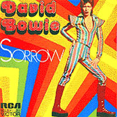

1973 - PIN UPS |
||||
Most David Bowie album covers seemed more like fashion shoots than record sleeves. Having himself become a pin-up in the early 70s, Bowie posed with 60s supermodel Twiggy (whom he'd sung about as "Twig the wonder kid" on the Aladdin Sane cut Drive-In Saturday) for Vogue magazine, and then decided he'd rather use the shot himself for a covers album that saw him record glammed-up versions of Swinging 60s classics by Pink Floyd (See Emily Play), Them (Here Comes The Night), Pretty Things (Rosalyn) and more. Photographer: Justin De Villeneuve |
||||
ROSALYN
Hey Rosalyn, tell me where you've been
Hey Rosalyn, tell me where you've been
All the night and all the day
Hide-and-seek's the game you play
Treat me as sure as sin
Oh Rosalyn, yeah Rosalyn
Hey Rosalyn, you're the girl for me
Hey Rosalyn, you're the girl for me
When I'm holding you so tight
It's so hard to say goodnight
It's you that I love now can't you see?
Do you really love me, do you love me true
Do you really love me, Rosalyn?
Yeah gotta know, yeah gotta know
Yeah gotta know, Rosalyn
Hey Rosalyn, you're the girl for me
Hey Rosalyn, you're the girl for me
When I'm holding you so tight
It's so hard to say goodnight
It's you that I love now can't you see?
Do you really love me, do you love me true
Do you really love me, Rosalyn?
Yeah gotta know, yeah gotta know
Yeah gotta know, Rosalyn
Yeah gotta know, yeah gotta know
Yeah gotta know, Rosalyn
Rosalyn
Yeah, Rosalyn, Rosalyn, Rosalyn, Rosalyn, ooh-yeah, ah
HERE COMES THE NIGHT
Oh, here it comes
Here comes the night
Yeah, here comes the night
Oh, yeah (here comes the night)
I can see right out my window
Walking down the street
My girl with another guy
His arms around her
Like it used to be with me
Oh it makes me want to die
Yeah, here it comes
Here comes the night
Yeah, here comes the night
Yeah (here comes the night)
There they go
Funny how they look so good together
Wonder what is wrong with me
Why cannot I accept
The fact she's chosen him
And simply let them be?
Yeah, here it comes
Here comes the night
Yeah, here comes the night
Oh she is with him
They are turning down the lights
Now he is holding her the way I used to do
I can see her closing her eyes
And telling him lies
Exactly like she told me too
Oh, here it comes
Here comes the night
Oh, here, here comes the night
Yeah (here comes the night)
Oh, here it comes
Oh, here, here comes the night
Here comes the night
Yeah (here comes the night)
Lonely, lonely night
Here comes the night
Here comes the night
I WISH YOU WOULD
Early in the morning by the break of day
That is when my baby went away
Come back baby I wish you would
This crying and grieving
Will not do me no good
Hugging and a-kissing, late at night
You know pretty baby it feels just right
Come back baby what you are trying to do?
Turning on me and some other men too
Come back baby give me one more chance
You know I still love
You gonna give you romance
Yeah, romance all night long
In my arms, oh yeah
Early in the morning by the break of day
That is when my baby went away
Come back baby I wish you would
This crying and grieving
Will not do me no good
Hey pretty baby I love you so
You know pretty baby it hurts me to see you go
Oh yeah
Oh yeah
Oh yeah
SEE EMILY PLAY
Emily tries but misunderstands
She's often inclined to borrow somebody's dreams 'til tomorrow
There is no other day
Let's try it another way
You'll lose your mind and play
Free games for May
See Emily play
Soon after dark Emily cries
Gazing at trees in sorrow hardly a sound 'til tomorrow
There is no other day
Let's try it another way
You'll lose your mind and play
Free games for May
See Emily play
Put on a gown that touches the ground
Float on a river for ever and ever
Emily
There is no other day
Let's try it another way
You'll lose your mind and play
Free games for May
See Emily play
EVERYTHING'S ALRIGHT
Oh, little baby
You know I've been away
Oh, little baby
You know I'll come today
Don't you know that
Everything's alright
(Everything's alright, baby)
Everything's alright
(So good I knew you would)
Everything's alright
(Everything's alright, babe)
Let me hold your hand and be your loving man (all night)
Let me hold your hand and be your loving man (all night)
Let me hold your hand and be your loving man (all night, alright!)
Oh, little baby
You know I feel so good
Oh, little baby
I never knew I could
And don't you know that
Everything's alright
(Everything's alright, babe)
Everything's alright
(So good I knew you would)
Everything's alright
(Everything's alright, babe)
Let me give you loving like nobody can (all night)
Let me give you loving like nobody can (all night)
Let me give you loving like nobody can (all night, alright!)
Let me hold your hand and be your loving man
Let me hold your hand and be your loving man
Let me hold your hand and be your loving man
No, no, no, no, no
That's a-loving you
(Must have been you
I'm gonna all night loving you)
No, no, no, no, no
I'll be good for you
Everything's alright
(Everything's alright, babe)
Everything's alright
(So good I knew you would)
Everything's alright
(Everything's alright, babe)
Let me give you loving like nobody can (all night)
Let me give you loving like nobody can (all night)
Let me give you loving like nobody can (all night, alright!)
Everything's alright
Everything's alright
Ooh
I CAN'T EXPLAIN
New feeling inside
It's a hot certain kind
I feel hot and cold
Down in my soul, baby
I can't explain
Going out of my mind
Dizzy in the head, and I'm feeling blue
Things you say well maybe they're true
I get funny dreams again and again
Knows what it means, but
Can't explain
I think it's love
Say it to you
When I feel blue
I can't explain, no, I can't explain
You know I can't explain
I'm going out of my mind
Well I'm a worried guy
But I can't explain
FRIDAY ON MY MIND
Monday morning feels so bad
Everybody seems to nag me
Coming Tuesday I feel better
Even my old man looks good
Wednesday just don't go
Thursday goes too slow
I've got Friday on my mind
(See my baby)
Gonna have fun in the city
(Feel like fucking you)
(Do my baby screw)
Be with my girl
She's so pretty
(All I want to do)
(I'll go crazy)
She looks fine tonight
(Zoom zoom zoom)
She is out of sight to me (so divine)
(Tonight) I spend my bread
(Tonight) I lose my head
(Tonight) I've got to get tonight
Monday I have Friday on my mind
Do the five-day drag once more (Monday blue)
There is nothing else that bugs me
More than working for the rich men (poor man, beggar man, thief)
Hey I'll change that scene one day
Today I might be mad
Tomorrow I'll be glad
'Cause I'll have Friday on my mind
(See my baby)
Gonna have fun in the city
(Feel like fucking you)
(Do my baby screw)
Be with my girl
She's so pretty
(All I want to do)
(I'll go crazy)
She looks fine tonight
(Zoom zoom zoom)
She is out of sight to me (so divine)
(Tonight) I spend my bread
(Tonight) I lose my head
(Tonight) I've got to get tonight
Monday I have Friday on my mind
[Ad-libs:]
(See my baby)
(Feel like fucking you)
Gonna have fun
(All I want to do)
(Zoom zoom zoom)
Be with my girl
(Zoom zoom zoom)
(Feel like loving you)
SORROW
With your long blonde hair and your eyes of blue
The only thing I ever got from you
Was sorrow sorrow
You acted funny
Trying to spend my money
You're out there playing your high-class games of sorrow sorrow
You never do what you know you ought to
Something tells me you're a Devil's daughter
Sorrow, sorrow
Ah, ah, ah
I tried to find her
'Cause I can't resist her
(I tried to find her)
I never knew just how much I missed her sorrow sorrow
With your long blonde hair and your eyes of blue
The only thing I ever got from you
Was sorrow sorrow
Oh-oh-oh-oh
Oh-oh-oh, oh-oh
With your long blonde hair
I couldn't sleep last night
With your long blonde hair
Ah, ah, ah
Ah, ah, ah, oh, yeah
Ah, ah, ah
Ah, ah, ah, oh, yeah
Ah, ah, ah
Ah, ah, ah, oh, yeah
DON'T BRING ME DOWN
I'm on my own, nowhere to roam
I tell you baby, don't want no home
I wander 'round, feet off the ground
I even go from town to town
I said I think this rock is grand
Say I'll be your man
Don't bring me down, don't bring me down
I met this chick, the other day
And then to me, she said she'll stay
I get this pad, just like a cave
And then we'll have, our live-in maid
And then I'll lead her on the ground
My head is spinning 'round
Don't bring me down, don't bring me down
I, I, I, I, I need a lover
Who's someone new
And then to her I will be true
I'll buy her furs and pretty things
I'll even buy a wedding ring
But until then I'll settle down
Say I'll be your man
Don't bring me down, don't bring me down
But until then I'll settle down
Say I'll be your man
Don't bring me down, don't bring me down
Don't bring me down
SHAPES OF THINGS
Shapes of things before my eyes
Just teach me to despise
Will time make man more wise
Here within my lonely frame
My eyes just hurt my brain
But will it seem the same
(Come tomorrow) will I be older
(Come tomorrow) maybe a soldier
(Come tomorrow) may I be bolder than today
Now the trees are almost green
But will they still be seen
When time and tide have been
Boy into your passing hands
Please don't destroy these lands
Don't make them desert sands
(Come tomorrow) will I be older
(Come tomorrow) maybe a soldier
(Come tomorrow) may I be bolder than today
Soon I hope that I will find
A seed within my mind
That won't disgrace my kind
ANYWAY, ANYHOW, ANYWHERE
I can go anyway
(Way I choose)
I can live anyhow
(Win or lose)
I can go anywhere
(For something new)
Anyway, anyhow, anywhere I choose
Do anything
(Right or wrong)
I can talk anyhow
(And get along)
I don't care anyway
(I never lose)
Anyway, anyhow, anywhere I choose
Nothing gets in my way
Not even locked doors
Don't follow the lines
That been laid before
I get along anyway I care
Anyway, anyhow, anywhere
I can go anyway
(Way I choose)
I can live anyhow
(Win or lose)
I can go anywhere
(For something new)
Anyway, anyway, anywhere I choose
Anyway, anyway I choose!
I wanna go
Do it myself, do it myself
Do it myself, do it myself
Anyway, anyway I choose
WHERE HAVE ALL THE GOOD TIMES GONE?
In my life I've never stopped
To worry about a thing
Opened up and shouted out
And never tried to see
Wondering if I've done wrong
Will this depression last for long
Won't you tell me
Where have all the good times gone?
Where have all the good times gone?
Where have all the good times gone?
Once we had an easy ride
And always felt the same
Time was on our side
And I had everything to gain
Let it be like yesterday
Please let me have happy days
Ma and Pa looked back on all the things they used to do
Didn't have no money and they always told the truth
Daddy didn't have no toys
And Mummy didn't need no boys
Won't you tell me
Where have all the good times gone?
Where have all the good times gone?
Where have all the good times gone?
Yesterday was such an easy game for you to play
But let's face it things are so much easier today
Guess you need some bringing down
Get your feet back on the ground
Won't you tell me
Where have all the good times gone?
Where have all the good times gone?
Where have all the good times gone?
|
||||
SINGLES |
||||
 |
||||